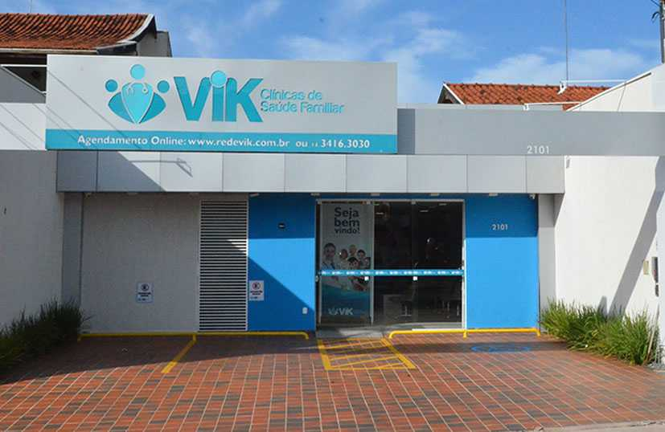
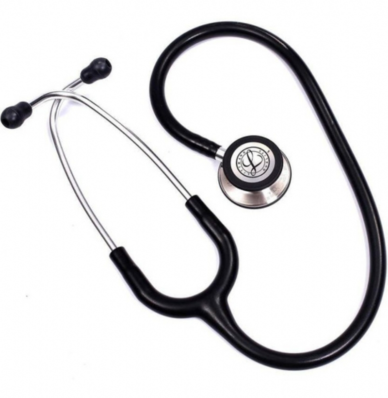

Bem-vindo à Clínica ABC Health
Na Clínica ABC Health, oferecemos uma ampla gama de serviços médicos para atender às suas necessidades de saúde. Nossa equipe é composta por profissionais altamente qualificados e dedicados ao seu bem-estar, sempre prontos para oferecer atendimento humanizado e personalizado. Desde nossa fundação em 1995, temos sido uma referência em cuidados médicos na região de Uberlândia, atendendo milhares de pacientes com excelência e dedicação. Nossa clínica conta com mais de 50 especialistas em diversas áreas da medicina, incluindo cardiologia, dermatologia, ginecologia, pediatria, ortopedia, oftalmologia, neurologia, endocrinologia, urologia e muitas outras especialidades fundamentais para o cuidado integral da saúde.
Além de consultas e exames, contamos com programas de prevenção, acompanhamento de doenças crônicas e orientações sobre qualidade de vida. Nosso compromisso é garantir que cada paciente receba atenção integral, desde o primeiro contato até o acompanhamento pós-consulta. Desenvolvemos protocolos específicos para cada tipo de atendimento, garantindo que nossos pacientes recebam o melhor tratamento possível. Nossa equipe multidisciplinar trabalha de forma integrada, compartilhando conhecimentos e experiências para oferecer soluções personalizadas para cada caso. Mantemos registros detalhados de todos os atendimentos, permitindo um histórico completo da saúde de cada paciente e facilitando o acompanhamento a longo prazo.
Explore nosso site para saber mais sobre nossos serviços, agendar consultas, conhecer nossa equipe multidisciplinar e ficar por dentro das novidades e campanhas de saúde que promovemos ao longo do ano. Oferecemos também um sistema online de agendamento que permite aos pacientes marcarem consultas 24 horas por dia, sete dias por semana. Nossa plataforma digital inclui acesso a resultados de exames, histórico médico, lembretes de consultas e muito mais. Participamos regularmente de campanhas de vacinação, prevenção ao câncer, diabetes, hipertensão e outras condições de saúde prevalentes em nossa comunidade. Nosso blog médico é atualizado semanalmente com artigos educativos sobre diversos temas de saúde, escritos por nossos especialistas.
Nossa Missão
Nosso objetivo é proporcionar cuidados de saúde de alta qualidade, com foco no paciente e na comunidade. Acreditamos que a saúde é um direito de todos e trabalhamos para garantir que nossos serviços sejam acessíveis, eficazes e inovadores. Nossa missão vai além do simples tratamento de doenças; buscamos promover o bem-estar completo de nossos pacientes através de uma abordagem holística que considera não apenas os aspectos físicos, mas também os emocionais, sociais e espirituais da saúde. Desenvolvemos parcerias com instituições de ensino e pesquisa para manter nossa equipe sempre atualizada com as mais recentes descobertas médicas e tecnologias disponíveis no mercado.
Buscamos constantemente aprimorar nossos processos e investir em tecnologia de ponta para oferecer diagnósticos precisos e tratamentos modernos. Valorizamos a escuta ativa, o respeito às individualidades e a promoção do bem-estar físico, mental e social de nossos pacientes. Nossa clínica está equipada com os mais modernos equipamentos médicos, incluindo ressonância magnética de alta resolução, tomografia computadorizada multicorte, ultrassom 4D, equipamentos de endoscopia avançada, laboratório de análises clínicas automatizado e muito mais. Mantemos um programa contínuo de treinamento para toda nossa equipe, garantindo que todos estejam capacitados para utilizar essas tecnologias da melhor forma possível. Nosso sistema de gestão hospitalar permite o acompanhamento em tempo real de todos os processos, desde o agendamento até a entrega de resultados.
Estamos comprometidos com a inovação e a melhoria contínua, sempre buscando as melhores práticas do setor para transformar vidas e contribuir para uma sociedade mais saudável e consciente. Participamos ativamente de congressos médicos nacionais e internacionais, mantendo nossa equipe sempre atualizada com as últimas tendências e descobertas na área da saúde. Desenvolvemos protocolos de atendimento baseados em evidências científicas e melhores práticas internacionais. Nossa clínica é certificada por diversos órgãos reguladores e mantém padrões de qualidade reconhecidos internacionalmente. Investimos continuamente em pesquisa e desenvolvimento, colaborando com universidades e centros de pesquisa para contribuir com o avanço da medicina.
Nossos Valores
Integridade, compaixão e excelência são os pilares que sustentam nossa prática. Valorizamos a transparência em todas as nossas interações e buscamos construir relacionamentos de confiança com nossos pacientes e suas famílias. A integridade se manifesta em cada decisão que tomamos, desde o diagnóstico honesto até a prescrição de tratamentos baseados exclusivamente no que é melhor para o paciente. Nossa compaixão se expressa através do cuidado atencioso, da escuta empática e do suporte emocional que oferecemos a todos que nos procuram. A excelência é perseguida diariamente através do aperfeiçoamento contínuo de nossos processos, da educação permanente de nossa equipe e do investimento constante em tecnologia e infraestrutura.
Na Clínica ABC Health, cada paciente é tratado com dignidade e respeito, independentemente de sua condição ou origem. Incentivamos o trabalho em equipe, a ética profissional e o desenvolvimento contínuo de nossos colaboradores, pois acreditamos que um ambiente saudável reflete diretamente na qualidade do atendimento prestado. Nosso código de ética é rigorosamente seguido por todos os membros da equipe, garantindo que os mais altos padrões morais e profissionais sejam mantidos em todas as situações. Promovemos regularmente treinamentos sobre diversidade, inclusão e direitos dos pacientes, assegurando que todos sejam tratados com igualdade e respeito. Nossa política de portas abertas permite que pacientes e familiares expressem suas preocupações e sugestões diretamente à administração, mantendo um canal de comunicação sempre aberto e transparente.
Nosso compromisso é ser referência em saúde, promovendo ações educativas, responsabilidade social e sustentabilidade em todas as nossas atividades. Desenvolvemos programas comunitários de educação em saúde, oferecendo palestras gratuitas em escolas, empresas e organizações comunitárias sobre prevenção de doenças, primeiros socorros, saúde mental e outros temas relevantes. Nossa clínica adota práticas sustentáveis, incluindo o uso de energia renovável, gestão adequada de resíduos médicos, digitalização de prontuários para reduzir o uso de papel e programas de reciclagem. Mantemos parcerias com ONGs locais para oferecer atendimento médico gratuito ou a preços reduzidos para populações carentes, contribuindo para a democratização do acesso à saúde de qualidade em nossa região.
Nossa Infraestrutura
A Clínica ABC Health conta com uma infraestrutura moderna e completa, projetada especificamente para oferecer o máximo de conforto e segurança aos nossos pacientes. Nosso edifício de cinco andares abriga mais de 30 consultórios médicos especializados, cada um equipado com tecnologia de ponta e mobiliário ergonômico. Possuímos salas de exame específicas para cada especialidade, garantindo que os profissionais tenham todas as ferramentas necessárias para realizar diagnósticos precisos e eficientes. Nossa recepção ampla e aconchegante foi projetada para proporcionar um ambiente acolhedor, com áreas de espera confortáveis, sistema de entretenimento, conexão Wi-Fi gratuita e um café disponível 24 horas por dia.
O centro de diagnóstico por imagem da clínica é um dos mais avançados da região, equipado com aparelhos de última geração que permitem exames de alta precisão com o mínimo de desconforto para o paciente. Nosso laboratório de análises clínicas processa mais de 1000 exames por dia, com resultados disponibilizados em tempo recorde através de nossa plataforma digital. A farmácia interna garante que os medicamentos prescritos estejam sempre disponíveis, com farmacêuticos especializados prontos para esclarecer dúvidas sobre posologia e interações medicamentosas. Além disso, mantemos uma biblioteca médica com mais de 5000 volumes especializados, disponível para consulta de profissionais e estudantes.
Nossa preocupação com a acessibilidade se reflete em cada detalhe da estrutura física da clínica. Todos os andares são servidos por elevadores modernos e seguros, com sinalização em braile e comandos de voz. Rampas de acesso, banheiros adaptados, vagas de estacionamento preferenciais e cadeiras de rodas disponíveis garantem que pessoas com mobilidade reduzida possam utilizar todos os nossos serviços com autonomia e dignidade. O sistema de climatização mantém temperatura e umidade ideais em todos os ambientes, enquanto o sistema de purificação do ar garante um ambiente sempre limpo e livre de contaminantes. A iluminação LED de última geração proporciona conforto visual e contribui para nossa política de sustentabilidade.
Especialidades Médicas
A Clínica ABC Health oferece uma ampla gama de especialidades médicas, garantindo atendimento integral para todas as idades e condições de saúde. Nossa equipe de cardiologia é reconhecida regionalmente pela excelência no tratamento de doenças cardiovasculares, realizando desde consultas preventivas até procedimentos complexos como cateterismo e angioplastia. O departamento de dermatologia oferece tratamentos para condições de pele, cabelo e unhas, incluindo procedimentos estéticos e cirurgias dermatológicas. Nossa ginecologia e obstetrícia acompanha mulheres em todas as fases da vida, desde a adolescência até a menopausa, oferecendo cuidados especializados durante a gravidez e parto.
O setor de pediatria da clínica é especialmente preparado para atender crianças de todas as idades, com ambientes lúdicos e profissionais especializados no cuidado infantil. Nossa ortopedia e traumatologia trata lesões ósseas, musculares e articulares, utilizando técnicas minimamente invasivas sempre que possível. O departamento de oftalmologia conta com equipamentos de última geração para diagnóstico e tratamento de doenças oculares, incluindo cirurgias de catarata, glaucoma e correção de miopia. A neurologia oferece avaliação e tratamento de distúrbios do sistema nervoso, com especialistas em epilepsia, Alzheimer, Parkinson e outras condições neurológicas.
Nossa endocrinologia especializa-se no tratamento de diabetes, doenças da tireoide, obesidade e outros distúrbios hormonais, oferecendo programas integrados de educação e acompanhamento. A urologia atende homens e mulheres com problemas do sistema urinário e reprodutor masculino, incluindo tratamentos para próstata, cálculos renais e incontinência urinária. O departamento de gastroenterologia realiza diagnóstico e tratamento de doenças do aparelho digestivo, com equipamentos modernos para endoscopia e colonoscopia. Além dessas especialidades, oferecemos também psiquiatria, pneumologia, reumatologia, geriatria, infectologia e medicina do trabalho, garantindo cobertura completa para todas as necessidades de saúde de nossos pacientes.
Nossa Estrutura
 |
 |
 | |
 |
 |
 |  |